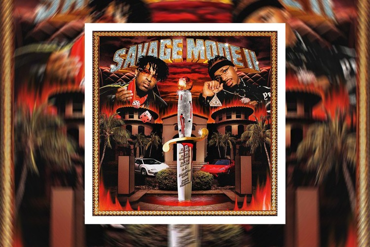

Profile
Alias: Post Malone
Age: 27
Genre: Hip-Hop
Popular Hits
21 Savage - Bank Account
21 Savage, Metroboomin - X
21 Savage - A Lot
Personal Favorites

21 Savage, Metroboomin - Many Men (2020)

21 Savage - Numb (2017)
21 Savage, Metroboomin - Mad High (2016)